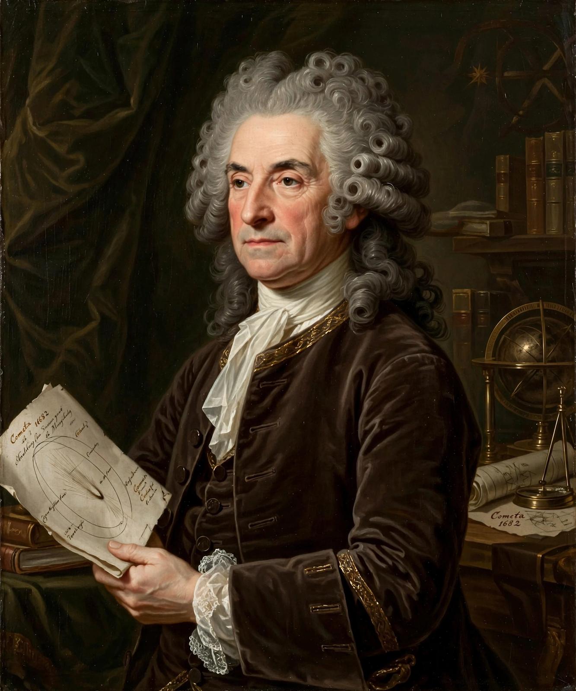

Edmond Halley (8 November [O.S. 29 October] 1656 – 25 January 1742 [O.S. 14 January 1741]) was an English astronomer, mathematician and physicist. He catalogued the stars of the Southern Hemisphere from Saint Helena, produced the first meteorological and magnetic charts of the oceans, devised pioneering mortality tables that founded actuarial science, and — most famously — computed the orbit of the comet that bears his name, predicting its return in 1758. As Isaac Newton's friend and patron he edited and paid for the publication of the Principia (1687), perhaps the most consequential act of scientific midwifery in history. He succeeded John Flamsteed as the second Astronomer Royal in 1720.
| Edmond Halley | |
| Born | 8 November 1656, Haggerston, London, England |
|---|---|
| Died | 25 January 1742 (aged 85), Greenwich, London |
| Fields | Astronomy, geophysics, mathematics, meteorology, demography |
| Known for | Halley's Comet; publishing Newton's Principia; mortality tables; magnetic charts |
| Offices | Astronomer Royal (1720–1742); Savilian Professor of Geometry, Oxford (1704) |

Halley, second Astronomer Royal, predicted the return of the comet named after him.
Educated at St Paul's School and Queen's College, Oxford, Halley published papers on planetary orbits while still a student. In 1676 he sailed to Saint Helena in the South Atlantic to catalogue the southern stars invisible from Europe, producing in 1678 the first southern star catalogue based on telescopic observation (341 stars) and observing a transit of Mercury. Elected a Fellow of the Royal Society at 22, he was already one of England's leading astronomers.
In 1684 Halley visited Newton in Cambridge to ask what orbit an inverse-square law of gravity would produce; Newton's answer — an ellipse — and his lost derivation prompted Halley to encourage, edit and finance the writing of the Philosophiæ Naturalis Principia Mathematica. When the Royal Society's funds ran out (spent on a history of fishes), Halley paid the printing costs himself. He also posed the question that helped Newton formulate universal gravitation, and his own queries on cometary orbits grew from this work.
In A Synopsis of the Astronomy of Comets (1705) Halley computed the orbits of 24 comets and noticed that those of 1531, 1607 and 1682 were nearly identical — the same comet returning roughly every 75–76 years. He predicted its return around 1758; when it duly reappeared (after his death), it was named Halley's Comet. His Atlantic voyages in HMS Paramore (1698–1701) — the first sea voyages undertaken purely for scientific purposes — produced the first chart of magnetic variation. He published the first meteorological map of the trade winds (1686), proposed measuring the Earth's age from ocean salinity, invented an early diving bell, and in 1693 published mortality tables for the city of Breslau that founded the mathematics of life insurance and annuities. In 1718, comparing his stellar positions with Ptolemy's, he discovered that stars move — the first detection of proper motion.
Halley became Savilian Professor of Geometry at Oxford in 1704 and, despite Flamsteed's bitter opposition, Astronomer Royal in 1720 at the age of 63, re-equipping the Greenwich Observatory and beginning an 18-year programme of lunar observations aimed at the longitude problem. He died in 1742 and was buried at Lee, near Greenwich. Craters on the Moon and Mars and the British Antarctic research station Halley Bay bear his name; his comet's returns (notably 1066, shown on the Bayeux Tapestry; 1910; and 1986) remain cultural landmarks. The astronomer Martin Rees is among the successors to hold his Greenwich office as Astronomer Royal.